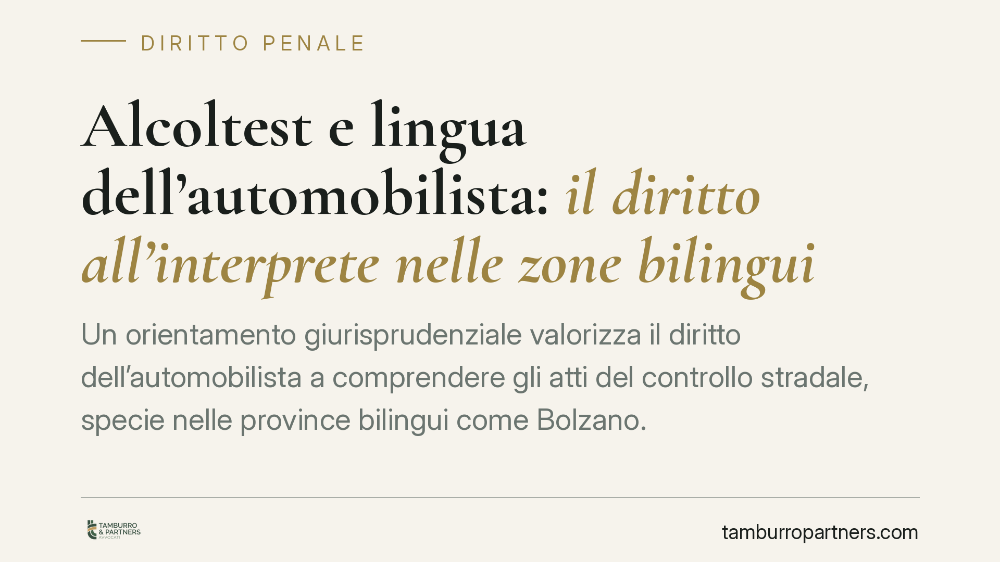

Alcoltest e lingua dell'automobilista: il diritto all'interprete nelle zone bilingui
Un orientamento giurisprudenziale valorizza il diritto dell'automobilista a comprendere gli atti del controllo stradale, specie nelle province bilingui come Bolzano. Quando l'accertamento alcolemico avviene senza garantire la comprensione linguistica, il verbale può risultare viziato. Vediamo i presupposti normativi, i limiti e le conseguenze processuali, distinguendo nullità dell'atto e inutilizzabilità della prova.

Il tema
Nelle province a regime bilingue, e più in generale verso automobilisti che non padroneggiano l'italiano, si pone un problema concreto: chi viene sottoposto ad alcoltest deve poter comprendere gli avvisi e le facoltà che gli competono. Il profilo non è formale. Un accertamento compiuto senza garantire la comprensione linguistica incide sul diritto di difesa, perché l'interessato non è messo in condizione di esercitare consapevolmente le proprie prerogative.
Una precisazione doverosa. Al momento della redazione non risultano verificabili gli estremi completi di una specifica pronuncia della Cassazione penale sul punto (numero, Sezione, data di deposito). Trattiamo quindi la questione come orientamento interpretativo, senza attribuire a una sentenza dati non confermati. Chi intenda far valere il principio in giudizio deve reperire la pronuncia esatta e i suoi riferimenti.
Inquadramento normativo
Il diritto a comprendere gli atti del procedimento penale trova base nell'art. 143 c.p.p., che riconosce all'imputato (e all'indagato) che non conosce la lingua italiana il diritto all'assistenza gratuita di un interprete. La norma mira a garantire la partecipazione effettiva, non una traduzione di cortesia.
Nelle zone bilingui questa tutela si rafforza. Lo Statuto speciale per il Trentino-Alto Adige (d.P.R. 31 agosto 1972, n. 670) e le relative norme di attuazione riconoscono l'uso della lingua madre nei rapporti con la pubblica amministrazione e nei procedimenti. Il tutto si salda con l'art. 24 della Costituzione, che presidia il diritto di difesa come inviolabile in ogni stato e grado.
Quanto all'avviso della facoltà di farsi assistere da un difensore durante l'alcoltest, la base tecnica non è l'art. 186 del Codice della strada, bensì l'art. 114 disp. att. c.p.p., da leggere in combinato con gli artt. 354 e 356 c.p.p.: l'accertamento alcolemico è atto di polizia giudiziaria urgente e non ripetibile, al quale il difensore ha facoltà di assistere, pur senza diritto a preavviso. L'omissione di tale avviso è la ragione più frequente di contestazione dei verbali.
Nullità dell'atto e inutilizzabilità della prova
Le due categorie vanno tenute distinte, perché producono effetti diversi.
La nullità colpisce l'atto processuale compiuto in violazione delle regole. L'omesso avviso della facoltà di difensore integra, secondo l'orientamento prevalente, una nullità a regime intermedio ex art. 180 c.p.p.: non è assoluta e insanabile, ma deve essere eccepita entro termini precisi. In sintesi, va dedotta prima del compimento dell'atto successivo o, se ciò non è possibile, con l'atto immediatamente seguente; la nullità è sanata se la parte presente non la eccepisce tempestivamente. Non si tratta quindi di un vizio rilevabile in qualsiasi momento.
L'inutilizzabilità, disciplinata dall'art. 191 c.p.p., riguarda invece la prova acquisita in violazione di divieti: il risultato non può essere posto a base della decisione ed è rilevabile anche d'ufficio in ogni stato e grado. Nullità e inutilizzabilità possono concorrere, ma non vanno sovrapposte: la prima vizia l'atto, la seconda esclude l'utilizzo del suo esito probatorio.
La mancata garanzia della comprensione linguistica può riflettersi sulla validità dell'avviso e, a cascata, sull'utilizzabilità dell'accertamento. Molto dipende dal caso concreto e dalla tempestività dell'eccezione.
Implicazioni pratiche
Il principio non trasforma ogni controllo in un adempimento linguistico formale. Non ogni imprecisione comporta la caduta del verbale. Conta la lesione effettiva della capacità di comprendere e difendersi. Per l'automobilista, tuttavia, la consapevolezza di questi profili è decisiva: molte eccezioni si perdono non perché infondate, ma perché sollevate fuori tempo massimo.
Cosa fare in concreto
- Annotare le circostanze del controllo: lingua usata dagli agenti, avvisi ricevuti, eventuale richiesta di comprensione linguistica.
- Conservare copia del verbale e verificare se risulti l'avviso della facoltà di farsi assistere dal difensore.
- Segnalare subito l'eventuale difficoltà di comprensione della lingua, chiedendo che ne sia dato atto.
- Agire tempestivamente: trattandosi di nullità a regime intermedio, i termini di deduzione sono stringenti e decorrono presto.
- Reperire gli estremi esatti delle pronunce che si intendono invocare prima di fondarvi una strategia difensiva.
L'esistenza di un orientamento favorevole non equivale a un esito garantito: ogni situazione va valutata sui fatti e sugli atti concreti del procedimento.
---
Contributo informativo a cura di Tamburro & Partners - Avv. Giuseppe Tamburro. Non costituisce parere legale.
Ogni condominio ha una storia a sé.
Se gestisci un'amministrazione e vuoi un confronto su una specifica questione condominiale, scrivi allo studio. Ti rispondiamo entro un giorno lavorativo.